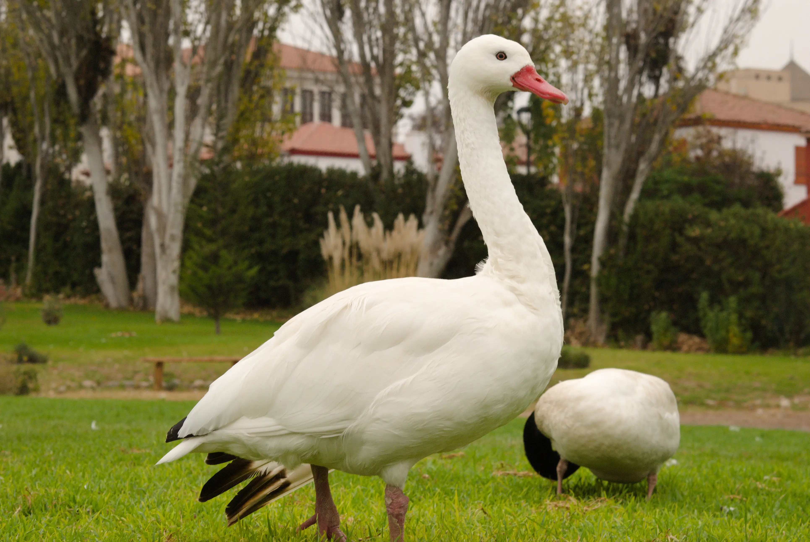
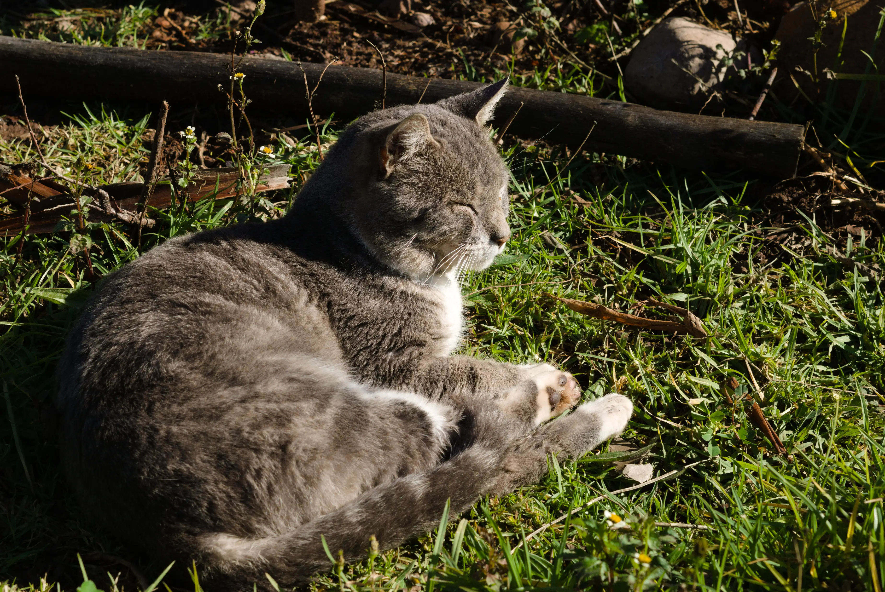
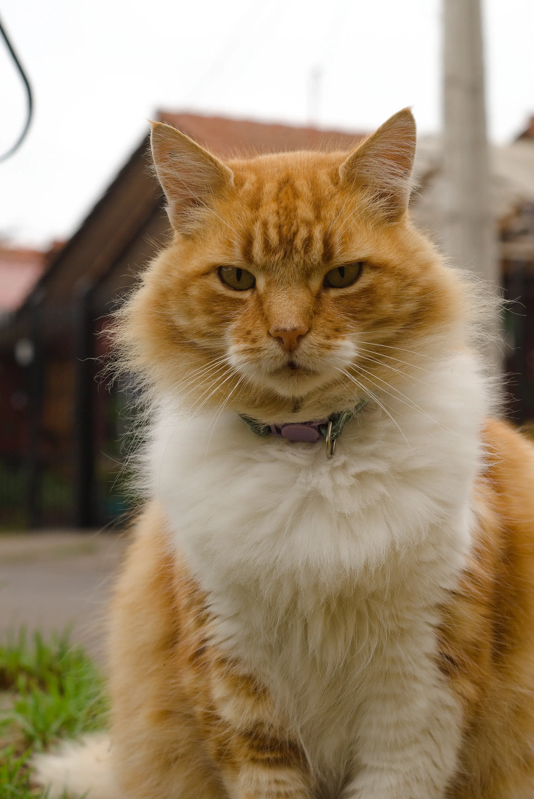

Vicente
Videos
Fotos
Estudios

Ingeniero mecánico
Durante mi formación como ingeniero, desarrollé habilidades en áreas distintas a mi profesión. Aprendí cómo crear páginas web y cómo tomar fotografías.
Esta página web es el resultado de mi aprendizaje y actualmente investigo el área de la computación para utilizar la inteligencia artificial en áreas de la ingeniería.
Específicamente, en la comparación de bombas de agua, al automatizar la extracción de sus características detalladas en archivos PDF, tales como: caudal, altura, potencia eléctrica, diámetros, etc.
Videos
Fotos


